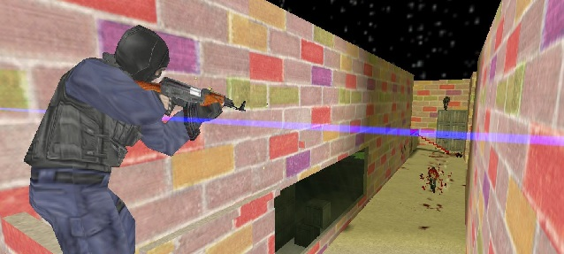
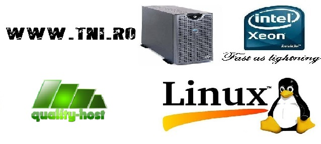

-

Performanta oferita de tni.ro si quality-host.ro/
Despre noi
Cum a inceput Totul?
Stand cu orele in fata calculatorului si jucandu-ma cu Andrey pe diferite servere de Counter strike 1.6 cu Zombie care nu ne placeau mai deloc ne-am hotarat sa ne facem un server de Zombie Plague Advance 1.6.1 dupa bunul nostru plac.
In data de 26.10.2012 ne-am lansat in mica noastra afacere. Am hostat server-ul la hostgame.org dar "firma" nefiind serioasa a trebuit neaparat sa ne mutam in luna urmatoare la o alta firma, si am ales tni.ro care ne gazduieste si pana in prezent. Nu pot spune ca server a mers excelent nici la tni.ro deoarece avea bug-uri destul de mari prin plugin-uri si cauzau diferite erori care opreau server-ul. A durat cam 3 luni pana am reusit sa fixez absoult totul si am fost nevoit sa verific fiecare plugin cu mare atentie.
Am creat pentru server si un mic forum gratuit dar nu a durat mult si am mutat server la o cumunitate platita de unul. Acea persoana schimbandu-si numele la comunitate din luna in luna am pierdut foarte multi jucatori fapt care a determinat migrarea server-ului din nou.
Acum am creat acesta mica comunitate cu speranta ca ne vom extinde si v-om putea cumpara si un domeniu .ro
In prezent
In prezent am resusit cu ajutorul lui Danutz si al lui Cata96Cata sa cumparam si un domeniul .ro
De ce noi?
De ce ai ramane pe server(ele) noastre?
Deoarece noi avem multe lucruri pe care nu le gasisti pe alte servere, ca de exemplu: Avem o clasa de zombie destul de variata cum are fi Alien(merge pe pereti), Predator(se face invizibil), Zombie de regenerare(isi regenereaza viata), Zombie Camuflat(arata ca omul normal), Zombie Chinezesc (demage x5), Asistenta(reinvie daca moare).
De asemeni avem si multe Extra iteme cum are fi: Jetpack+Bazooka, Gaus,Armura anti-infectare,Masca anti-infectare, poti cumpara 1000hp, multi-saritura.Daca esti zombie poti cumpara: Antidot, Imunitate(15sec), Bomba pentru Infectare, Multi-Saritura, Armura Anti-Gaus, Poti cumpara 1000hp
Detinem si un plugins de lasere unic, care nu permite planterea laserelor in moduri cum are fi: Nemesis, Asasin, Supravietuitor, Sniper. Acestea au fost doar cateva avantaje pentru a ramane pe server(ele) noastre.
Va rugam sa le vizitati!
De ce ai ramane pe site/forum-ul nostru?
Pentru ca alaturi de noi ve invata o multime de lucruri folositoare in domeniul IT dar si in lumea Gaming-ului.
Cu o experienta de 5 ani in domeniul IT, 4 ani in domeniul Counter Strike 1.6 si 2 ani in Domeniul Minecraft noi Oferim Suport Tehnic nu doar pentru cei care au un server la noi ci pentru toata lumea. De asemeni oferim Suport si la problemele in legatura cu PC-urile/site-urile/forum-urile voastre.